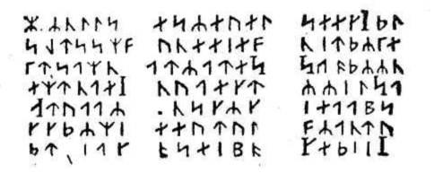

Utreck kadifesiyle kaplı kanepesine gömülmüş olan dayım, elinde tuttuğu kitaba hayranlıkla bakıyor ve sık sık:
- Ne kitap! Ne kitap! diye söyleniyordu.
Bu hayran ifade, Profesör Lidenbrock'un aynı zamanda kitap meraklısı olduğunu bana hatırlatmış oldu. Dayımın nazarında bir kitabın değer taşıması için zor bulunan cinsten veya silik, satırlarla dolu olması lâzımdı.
Dayım:
- Bak! dedi. Bu sabah yahudi Hevelius'un dükkânında ne buldum. Paha biçilmez bir hazine...
Kitaba bakmadan:
- Fevkalâde! diye cevap verdim.
Dayım konuşurken kitabı mütemadiyen açıp, kapatıyordu. Beni hiç ilgilendirmediği halde, sahte bir dikkatle:
- Kitabın ismi ne? diye sordum. Dayım, heyecanlı bir sesle:
- XII. asırda yaşayan İrlandalı yazarlardan Snorre Turleson'un Heims-Kringlas'ı, diye cevap verdi, İzlanda'da saltanat süren Norveçli prenslerin hayatlarını anlatıyor.
Bu, beni asla ilgilendirmeyen bir konuydu. Buna rağmen:
- Çok güzel! dedim, içindeki yazılar nasıl?
- Yazılar mı?. Sersem çocuk!.. Sana yazılardan bahseden kim!... önemli olan yazılar mı zannediyorsun?!. Bu, matbaa baskısı bir kitap değil ki!... En eski İskandinav lisanında elle yazılmış bir kitap...
Dayımın en son cümlesini bir papağan gibi tekrarladım. Dayım, kendinden emin, heyecanlı bir sesle:
- Hayır... Başka izahat istemeyeceğim!...
Bu konu beni hiç ilgilendirmiyordu. Fakat, dayım bunu düşünecek halde değildi. Buluşunun heyecanı içindeydi, izahatına devam etti:
- Bu yazı çok eskiden İzlanda'da kullanılırdı, icat eden de Odin'in kendisiydi. Şu yazının güzelliğine bak sersem çocuk! ilâhların ellerinden çıkmış gibi değil mi?
Cevap vermek niyetinde değildim, ilgi duyulmayan konularda susmanın ilâhlar kadar kralları da memnun edeceği muhakkaktı, işte bu karışık durumdayken, önemli bir olay dikkatimizi başka bir noktaya çekmiş oldu.
Bu, kitabın göze çarpmayan bir yerinden, kirli bir kâğıdın yere düşmesiydi.
Dayım, anlaşılması kolay bir heyecanla bu pis kâğıdın üzerine atıldı. Çok eski bir kitabın içinden düşen, tarihi meçhul bir kâğıdın dayımın gözünde sonsuz değeri olacağı muhakkaktı.
Kâğıdın üstüne atılırken:
- Nedir bu!... diye bağırdı.
Kâğıdı masanın üstüne yaydı. Boyu on beş santim, eni on santimdi.. Anlaşılması imkânsız olan o harfler, çapraz satırlar halinde bütün kâğıdı kaplamıştı.
İşte, Profesör Lidenbrock'la yeğenini, XIX uncu asrın en garip seyahatine sürükleyen yazının tam örneği:

Dayım yazıya birkaç saniye baktı. Sonra gözlüklerini çıkartarak:
- Bunun kitaptaki yazıyla aynı olduğuna eminim, dedi. Fakat... mana çıkartmak imkânsız.
Dayımın bu yazıyı okuyamamış olduğuna sevindiğimi söylersem yalan olmaz. Fakat, dayımın asabileştiği de gözümden kaçmıyordu. Parmaklarının, masanın üstünde trampet çalması buna en mükemmel işaretti. Dişlerinin arasından:
- Eski İzlanda lisanı olduğuna eminim! diye mırıldanıyordu.
Dayımın yanılmış olmasına imkân yoktu. Çeşitli lisanları bütün incelikleriyle biliyordu. Hakikî bir lisan uzmanıydı. Buna rağmen, kâğıdın üstündeki yazıyı okuyamamış olmasına ben de hayret ediyordum. Huyunu çok iyi bildiğim için, biraz sonra öfkeleneceğini tahmin ediyordum. Bu sırada şöminenin üstündeki saat ikiyi çaldı.
Aynı anda çalışma odasının kapısı aralandı.
Marthe:
- Yemeğiniz hazır, dedi. Dayım öfkeyle:
- Yemek de, yemeği pişiren de, yiyenler de cehennemin dibine gitsinler! diye bağırdı.
Marthe kaçtı. Ben de onu sessizce takip ettim. Nasıl olduğunu bilemiyorum, bir anda kendimi masadaki alışık olduğum yerde buldum.
Birkaç saniye bekledim. Dayım gelmedi. Kendisini tanıdığımdan beri ilk defa, sofraya karşı alakasızlık gösterdiğini görüyordum. Hele o günkü nefis yemeklere lakayt kalmayı hayalimden geçirmeğe bile cesaret edemezdim.
İşte pis bir kâğıdın dayıma neye mal olduğuna mükemmel bir misal. Saygılı bir yeğen olarak kendimi onun hesabına, hem de şahsım için yemeğe mecbur hissettim. Vicdanımın sesini dinleyerek, iki kişilik yemeği mideme aktarma, ettim.
Marthe;
- Şimdiye kadar böyle şey görmedim! diye söyleniyordu. Mösyö Lidenbrock'un sofraya gelmemesi imkânsız bir şey!
- Ben de inanamıyorum!
- Göreceksiniz mösyö Axel!... Hepimizi önemli olaylar bekliyor!
Bana kalırsa en önemli olay, dayımın yemeksiz kaldığını gördüğü zaman, öfkeyle ortalığı birbirine katması olacaktı.
Yemeğin son kırıntılarını çiğnemeğe çalıştığım sırada dayımın beni sabırsız bir sesle çağırdığını duydum. Derhal yerimden fırladım. Çalışma odasına koştum.